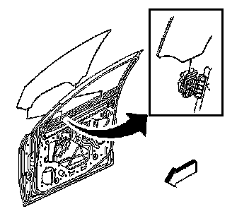

Front Door Window Glass: Service and Repair
Front Side Door Window Replacement
Removal Procedure

1. Run the window to the full closed position.
Caution: Refer to Glass and Sheet Metal Handling Caution .
Caution: Refer to Express Window Down Caution .
2. Remove the door trim panel. Refer to Front Side Door Trim Panel Replacement (Service and Repair) .
3. Remove the water deflector. Refer to Front Side Door Water Deflector Replacement (Service and Repair) .
4. Remove the window inner belt sealing strip. Refer to Front Side Door Window Belt Inner Sealing Strip Replacement (Front Side Door Window Belt Inner Sealing Strip Replacement) .
5. Tape the window in the closed position.
6. Loosen the window clamp nuts 4 revolutions.
7. Connect the door trim panel electrical connector.
8. Using the power window switch, lower the window regulator to separate the window from the clamps.
9. Remove the tape.
10. Remove the window by tilting the window forward then pulling the window up and out of the door.
Installation Procedure
Important: The window regulator should be at least 1/2 way down before installing the window.
1. Install the window down into the door.
2. Locate the window into the 2 window regulator clamps.
Important: Start the vehicle to ensure maximum power to the window motor. This is required in order to fully seat the window for adjustment.
3. Start the vehicle.
Notice: Refer to Fastener Notice (Fastener Notice) .
4. Using the power window switch, raise the window to the fully closed position.
Tighten the window clamp nuts to 11 N.m (98 lb in).
5. Install the window inner belt sealing strip. Refer to Front Side Door Window Belt Inner Sealing Strip Replacement (Front Side Door Window Belt Inner Sealing Strip Replacement) .
6. Inspect for proper window operation and a tight seal.
7. Shut off the vehicle.
8. Install the water deflector. Refer to Front Side Door Water Deflector Replacement (Service and Repair) .
9. Install the door trim panel. Refer to Front Side Door Trim Panel Replacement (Service and Repair) .